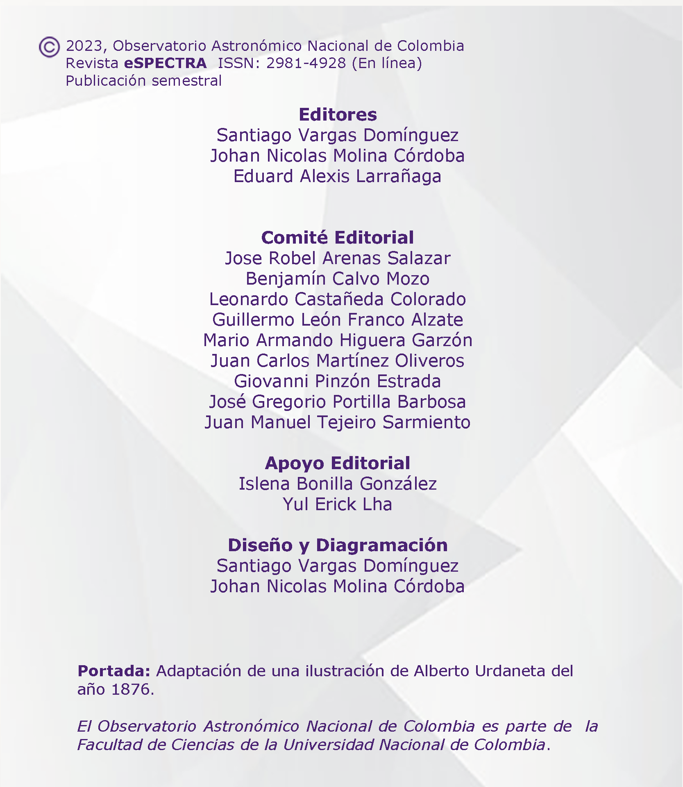

Revista deInvestigación
Te presentamos la nueva revista de investigación en Astronomía, Astrofísica, Cosmología y Ciencias Afines!
Esta iniciativa del Observatorio Astronómico Nacional de Colombia reúne trabajos desarrollados principalmente
por estudiantes, con el objetivo de difundir los resultados de sus investigaciones y fomentar estas áreas de estudio en el país.
La Revista


220 años del Observatorio
Este año celebramos con orgullo los 220 años de historia del Observatorio Astronómico Nacional de Colombia.
Desde su fundación en 1803, el observatorio ha sido un faro de conocimiento y descubrimiento científico.
A lo largo de las décadas, ha sido testigo de avances científicos, ha contribuido a la
formación de generaciones de científicos y ha promovido la divulgación de la ciencia en todo el país.
Hoy, el Observatorio Astronómico Nacional continúa siendo un referente en la investigación, consolidando
su legado como una institución emblemática en el ámbito astronómico de Colombia, y patrimonio histórico
y cultural de Colombia.
El profesor Mario Armando Higuera, director del OAN, escribe la editorial de este número inaugural, donde nos habla del nuevo reto en la Expedición Astronómica del Observatorio.
El profesor Mario Armando Higuera, director del OAN, escribe la editorial de este número inaugural, donde nos habla del nuevo reto en la Expedición Astronómica del Observatorio.
Revista eSPECTRA, Volumen 1, Número 1 (2023)
Artículos de Investigación

Notas Divulgativas
Eclipse de Sol
Colombia se prepara para uno de los eventos astronómicos más importantes del 2023, el eclipse
solar anular que tendrá lugar el próximo 14 de octubre. Durante este evento la Luna pasará
entre la Tierra y el Sol creando un impresionante círculo de luz, generando así un momento
donde el día se funde con la noche por unos instantes.
Este eclipse de Sol será observado con gran interés y fascinación por astrónomos, entusiastas de la
astronomía y el público en general,
brindando una oportunidad única para contemplar la majestuosidad y la belleza del cosmos.
¡Prepárate para maravillarte ante la grandiosidad del universo en este espectacular evento astronómico!
Semillero de Astronomía
La Universidad Nacional de Colombia tiene un nuevo semillero de astronomía "Cúmulo UN".
Este emocionante proyecto reúne a estudiantes apasionados de diversas áreas de estudio
y de las 9 sedes de nuestra prestigiosa institución. Cúmulo UN busca fomentar el interés
por la astronomía y las ciencias del espacio, brindando un espacio de aprendizaje colaborativo
y enriquecedor. Desde ingeniería hasta ciencias sociales, estos jóvenes entusiastas de la
astronomía se unen para compartir conocimientos, investigar y disfrutar de la belleza y los
misterios del cosmos. Este semillero se convierte en un faro de inspiración y crecimiento académico
para los estudiantes de la Universidad Nacional de Colombia. ¡Únete a Cúmulo UN y descubre las
maravillas del universo junto a una comunidad apasionada y comprometida con la astronomía!
Semillero VARYUN
VARYUN (VARiability of Young stars at UN) es un semillero estudiantil integrado por estudiantes de
pregrado y posgrado interesados en promover el buen uso de la instrumentación astronómica
disponible en el Observatorio Astronómico Nacional.
Ciclo de Conferencias
A partir de agosto y hasta noviembre de 2023, te invitamos a sumergirte en un viaje fascinante
a través del patrimonio científico, histórico y cultural del Observatorio Astronómico Nacional.
Nuestro programa de conferencias reúne a destacados expertos en diferentes campos,
quienes compartirán su conocimiento sobre los hitos científicos, los descubrimientos astronómicos
y las contribuciones del observatorio a lo largo de su ilustre trayectoria de 220 años.
No te pierdas esta oportunidad única y comparte con nosotros durante este ciclo de conferencias para celebrar
el legado de nuestro observatorio.
Contáctanos
Aquí nos encuentras
¡Queremos mantenernos en contacto contigo!
Síguenos en nuestras redes sociales y metaverso
Síguenos en nuestras redes sociales y metaverso